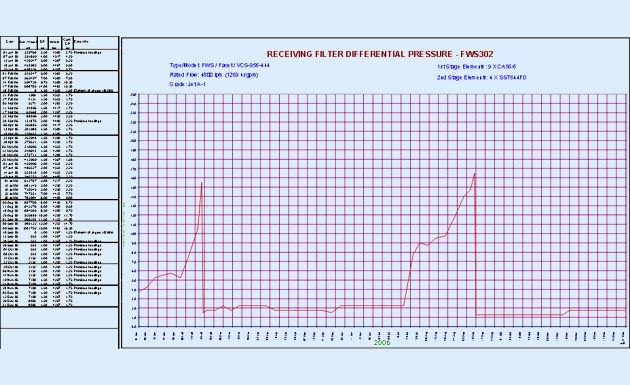
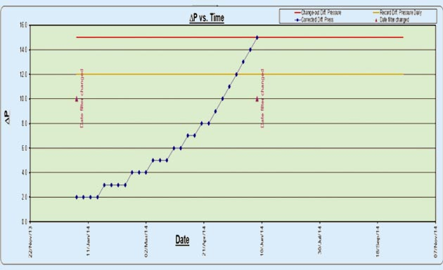
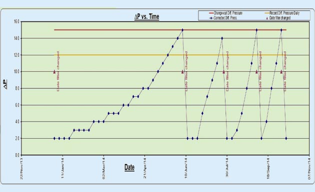

Session 8.4
Filter Performance Check
- Definitions
- General
- Example
 (1).png)
- RATED FLOW:
- Is the filter vessel’s initial manufacturer design flow rate for a certain configuration of a filter element set used in a particular vessel.
- Could be modified-reduced by blocking elements installation ports.
- New vessel configuration data plate has to be supplied by the manufacturer to suit the new condition of the vessel.
- Is the maximum achievable flow rate from a configuration of a pump, filter vessel, and pipelines set up
- Measured on-site with a newly installed set of filter elements
- Usually equal to but MUST BE LESS than the filter vessel-rated flow
- Is the ACTUAL measured flow rate during the operation of the fuelling pumping/filtration system
- Mainly affected – when measured at the same conditions – by the filter element blocking up
- Could be measured by means of typical flow rate meters and stopwatch
Filter Performance Check Definitions
MAXIMUM ACHIEVABLE FLOW:
OBSERVED FLOW:
- A clean filter element in a vessel will have many open passageways for the fuel to take, so it is easy for the fuel to get through.
- As a filter removes dirt or as a monitor removes dirt or water (monitors trap water as a gel), filter media is progressively getting clogged, or some passageways are plugged
- As the filter media gets clogged means that more energy has to be used to push the fuel through the remaining passageways
- If half of the holes are plugged, the fuel has to move through the remaining holes at twice the velocity
- Differential pressure is the measure of that lost energy
8.4.1 Filter Differential Pressure and Flow Rate
 (1).png)
- There is no pressure drop at ZERO flow
- dP is directly proportional to the flow rate
- an increase in the dP can take place simply because the flow rate is higher or a decrease because flow rate is lower.
- When the flowrate increases, more fuel is trying to squeeze through the filter in the same amount of time
- Higher flow results in higher restriction, thus higher DP
- For example, some aircraft can accept 850 gpm/3,200 lpm when the fuel tanks are empty, but this may decrease to just 150 gpm/560 lpm when you are flowing into the last small fuel tanks.
- NO dP correction is required if you are at full system flow
- But if you are flowing at a rate below 100% , you need to correct the observed dP to what it would have been if the flow rate had been at 100%
- Plot the corrected reading on the chart and see the trend
- 100% is not the Rated Flow of any component; it is the actual Maximum Achievable Flow
- DP readings taken at low flow rates (less than 50% of rated) will be very low and inherently inaccurate
- DP readings shall be taken as close to the max operating flowrate as possible (>90%)
Filter Differential Pressure and Flow Rate
- Differential Pressure or dP is a measurement of the pressure difference across a filter vessel Inlet and outlet when fuel is flowing
- dP is caused by static or inherent restrictions to the flow of fuel due to filter vessel/design configuration
- dP is also caused due to Element porosity and media of new elements known as Start-up dP
- dP due to Particulate matter/water held up within the filter media
- P is used to know the condition of filter elements in service, as with continuous use of filter, elements progressively hold up particulate matter or water leading to a rise in dP
- dP is used as a criterion to Change filter elements when the max dP is reached
- dP is used for Trend analysis on filter performance
- dP is shut down the flow and elements changed before dP becomes too high
- dP is used for investigation, and when sudden/unusual changes in dP are observed
Filter Differential Pressure
Causes of dP in the filter vessel
Usefulness of dP
- All filter vessels shall be drained DAILY of any free water while under the continuous pump or hydrant pressure and perform a CWD Check
- Filter vessels that are NOT in daily use should be kept FULL by re-circulation.
- Filter vessels that are NOT in daily use should be drained at least WEEKLY and kept full of product.
- Observe and record dP and flow rate during EACH pumping/ underwing pressure fuelling for every vehicle in service.
- Ensure that the dP at the maximum achievable flow rate for the vehicle DOES NOT EXCEED the maximum changeout dP recommended by the manufacturer. Unexpected variations shall be reported and investigated.
- To enable TREND MONITORING of filter dP, weekly graphs of dP shall be prepared by recording or dP corrected to the maximum achievable flow rate by using either a conversion graph, table or calculator supplied/endorsed by the filter OEM
- The conversion observed dP to corrected dP at the maximum achievable flow rate is NOT accurate when dP readings are taken at LOW FLOW rates and
- dP readings taken at LESS than 50% of maximum flow are NOT VALID.
- Investigation should be conducted if a dP recorded on the weekly graph is DROPPED BY 5 PSI OR MORE from a previous dP recorded
Filter Performance Requirement - EI1530, JIG 1 and JIG 2
- The filter performance can be monitored by observing differential pressure
- This must be either taken at maximum flow (preferable) or close to it
- Differential pressure readings at less than 50% of the filter assembly's rated flow are meaningless for the purpose of correcting to maximum flow
Filter Performance Check

- The differential pressure (DP) shall be noted & recorded at least each week and the results progressively charted on a graph.
- This will enable: Detection of a DP rise due to blocking up of the elements Detection a sudden drop in DP indicating a rupture or major by-pass

- There is a form in the QC Manual which has an example of how to work out corrected DP
- Example: Maximum Achievable flow = 3000 lpm
- Observed flow = 2400 lpm = 80% of max. achievable flow
- Observed DP = 10 psi
- 10 psi at 80% maximum achievable flow is equal to corrected DP of 13 psi
Filter DP correction
The challenges of DP correction
Filter Differential Pressure
Filter DP graphs
Filter Differential Pressure
Sudden DP change
“If the corrected DP is 5 psi or more below the previous corrected DP reading, an investigation shall be conducted and the filter vessel should be opened for inspection and elements replaced if necessary”


Filter Differential Pressure
Sudden Drop in DP – immediate Investigation
JIG Indicates a drop of 5 psi or more should be investigated.
Possible Way forward
On any filter, a decrease in corrected DP can be as serious a problem and even a more serious problem than a high corrected DP, and it means you are very likely pumping UNFILTERED FUEL!
- This test shall be carried out and evaluated in accordance with joint ASTM D2276/IP 216 Standard Test Methods and Colour Standards incorporated in these methods. Colour shall be recorded on a wet and dry basis. Double (matched weight or preweighed) 0.8 micron membranes are used for gravimetric tests. Colorimetric tests are normally performed with a single membrane, but double colorimetric membrane testing (using two unweighted 0.8 micron membranes) is the preferred method, The quantity of fuel passed through the membranes used in both colorimetric and gravimetric determinations shall be 5 litres. All filter membrane tests (colorimetric and gravimetric) shall be carried out at a flow of at least 50% of the rated flow of the filter. All results shall be recorded and the membranes retained in accordance with retention requirements. Additional information on filter membrane testing and interpretation of results can be found in the JIG TID No 2 – Filter Membrane Testing.
- Double (matched weight or preweighed) 0.8 micron membranes are used for gravimetric tests. Colorimetric tests are normally performed with a single membrane, but double colorimetric membrane testing (using two unweighted 0.8 micron membranes) is the preferred method,
- The quantity of fuel passed through the membranes used in both colorimetric and gravimetric determinations shall be 5 litres.
- All filter membrane tests (colorimetric and gravimetric) shall be carried out at a flow of at least 50% of the rated flow of the filter. All results shall be recorded and the membranes retained in accordance with retention requirements.
- Additional information on filter membrane testing and interpretation of results can be found in the JIG TID No 2 – Filter Membrane Testing.
8.4.2Membrane filtration test
Acceptable Filter membrane test results
 (1).png)
 (1).png)